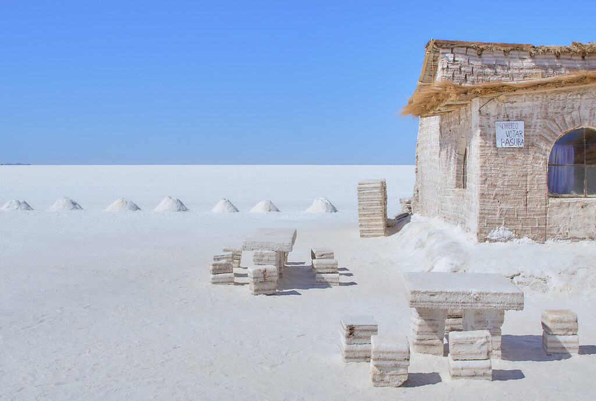
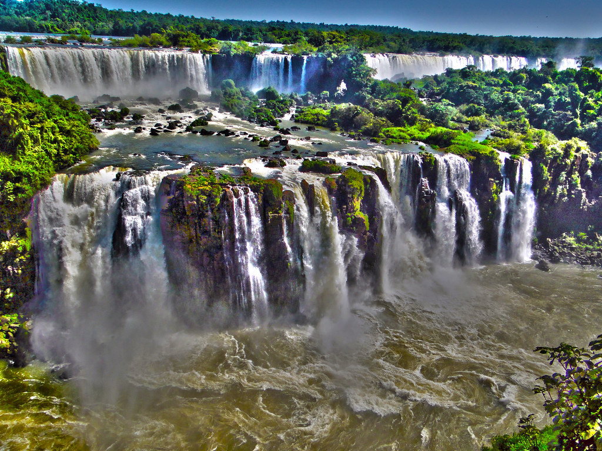

Contribuisci a realizzare il nostro viaggio
Per il nostro viaggio di nozze abbiamo pianificato un’avventura indimenticabile tra Perù, Bolivia, Cile e Brasile! Inizieremo esplorando Lima, la Valle Sacra e l’antica meraviglia di Machu Picchu, proseguendo poi verso le altitudini di La Paz e le acque mistiche del Lago Titicaca. Scopriremo i paesaggi surreali del Salar di Uyuni e il deserto di Atacama, prima di volare all'Isola di Pasqua, tra le misteriose statue Moai. Concluderemo il viaggio alle maestose cascate di Iguazú e sulle spiagge di Rio de Janeiro.
Vuoi aiutarci a realizzare il nostro viaggio?
Puoi farlo tramite bonifico bancario all'IBAN IT0000000000000000000 intestato a Simone Ripamonti
Itinerario
Perù
In Perù, il nostro itinerario prevede l'arrivo a Lima dove trascorreremo una giornata esplorando la città. Successivamente, ci dirigeremo a Cuzco al mattino per visitare questa storica città. Avremo un giorno di acclimatamento a Cuzco per adattarci all'altitudine. Da Cuzco, partiremo per un tour della Valle Sacra, visitando Chinchero, Maras, Moray e Ollantaytambo, prima di raggiungere Aguas Calientes. Il giorno successivo, visiteremo Machu Picchu, ritorneremo ad Aguas Calientes e poi a Cuzco.

Bolivia
In Bolivia, raggiungeremo La Paz, dove trascorreremo la giornata. Dopo una giornata a La Paz, ci sposteremo a Copacabana. Il giorno seguente faremo un tour delle isole Isla del Sol e Isla de la Luna sul Lago Titicaca. Successivamente, torneremo a La Paz. Da qui ci dirigeremo a Uyuni per visitare la città e iniziare un tour di tre giorni nel deserto di sale di Uyuni, con pernottamenti a Agencha e Laguna Colorada, terminando il tour a San Pedro de Atacama in Cile.
Cile
In Cile, esploreremo San Pedro de Atacama con un’escursione al Salar de Talar e una possibile escursione verso nord il giorno successivo. Poi ci sposteremo verso Santiago. Da Santiago, ci dirigeremo a Rapa Nui (Isola di Pasqua) per un tour di tre giorni esplorando i siti archeologici e culturali dell’isola, inclusi i famosi Moai.

Brasile
In Brasile, raggiungeremo Foz do Iguaçu per una giornata dedicata alla visita delle spettacolari cascate di Iguazu. Successivamente, ci sposteremo a Rio de Janeiro per trascorrere alcuni giorni esplorando la città, visitando le sue spiagge famose e il Cristo Redentore. Infine, torneremo a Milano, con scalo a Lisbona.
